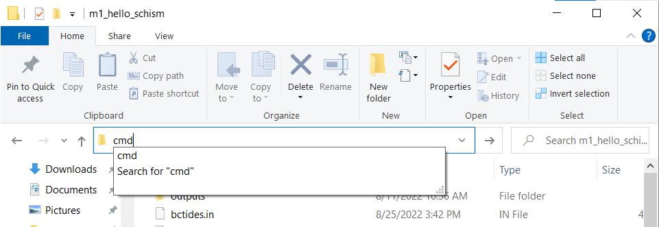

Module 1: Overview¶
The goal of this session is to practice running SCHISM using a pre-configured simulation on a small synthetic domain. The tutorial can be launched on either Windows or Linux.
Fig. 3 Simplified domain used for Hello SCHISM practice problems. Ocean boundary is on the left, two river inputs on the right. Domain length in the x direction is roughly 56km¶
Running the Model¶
Obtain SCHISM and follow the installation instructions and prerequisites
On Linux you will have to compile the model.
On Windows, you will need precompiled Bay-Delta executables (found in “./software/schism_windows_5.10_build”).
Navigate to “./module_data/m1_hello_schism”
Make sure that the tools are accessible and schism build directory is on path (See Getting Started).
Make sure that there is an /outputs directory inside the module directory. We include this with the module folder, so it should be there.
Obtain a windows command prompt window by typing cmd in the windows explorer navigation bar and press enter. This sets the current directory to the folder you were viewing (m1_hello_schism). 
Launch the run in the command prompt using the following command:
{kind=link}
mpiexec -np 8 pschism_PREC_EVAP_GOTM_TVD-VL.exe 4
This will take at least 20 minutes to run.
Understanding the command¶
The program mpiexec is a wrapper used to launch parallel processes (mpirun is a synonym on many systems). The name of the executable is pschism_PREC_EVAP_GOTM_TVD-VL derived from “parallel SCHISM”. The flag -np 8 indicates that mpiexec should use 8 processors for computing, while the “4” at the end of command is the number of processors dedicated to writing output.
The number of output processors equals the number of output types desired in your param.nml file. You should see eight processors if you use the “top” command (in Linux) or the Performance monitor application (in Windows).
Monitoring Output¶
SCHISM creates an output log “./outputs/mirror.out” showing the simulation progress. Here you can look to see how much progress your simulation has made since there is no text output to the console. Look for the last lines in the file and find the “TIME STEP=” and “TIME=” line. Here you’re looking at which computational timestep the simulation has reached, and what the total time in seconds has elapsed in the simulation.
How many processors do I have (Windows) on my laptop/PC?¶
The number of processors (8 in this example) is system dependent. Even on this simple problem, we recommend a laptop with 8 cores, which is not uncommon in the current market. If you have a Windows desktop with more than 48 cores, you can run a realistic SCHISM model. In Linux, the number of physical cores is usually part of the specifications of the cluster or the job submission process. On Windows it can be a bit harder to figure out and there is a lot of confusion between a “logical processor” and a “core” with the latter more likely to provide you with speed benefits. The number of cores on windows can be discovered using the WMIC command.
WMIC CPU Get DeviceID,NumberOfCores,NumberOfLogicalProcessors
This will return something like the following:
DeviceID NumberOfCores NumberOfLogicalProcessors
CPU0 4 4
Station Outputs¶
The simulation defines some station output requests in the file station.in. Corresponding output is found in the columns of the files staout1, staout2 … in the /outputs directory. These files are text and can be opened easily in, say, excel or numpy. The columns in the staout* files belong to individual stations, and correspond to rows in station.in. In some cases the horizontal (x,y) positions of these stations are duplicates. The first row is the time in days since the beginning of the run.
DEPRECATED: COMBINING PER-PROCESSOR BINARY OUTPUTS¶
In SCHISM version 5.10 there is no longer the need for combining outputs, but for version 5.8 this may still be a requirement for viewing outputs. See DOCUMENT NAME for more information on combining outputs for earlier versions of SCHISM.